原文连接:https://www.cnblogs.com/yichunguo/p/11991000.html
@
Mybatis整合spring其实就是SSM框架中SM的整合集成。
1.整合思路
整合的思路其实就是Mybatis整合spring的核心
1、SqlSessionFactory对象应该放到spring容器中作为单例存在，spring默认是单例的。
2、传统dao的开发方式中，应该从spring容器中获得sqlsession对象。
3、Mapper代理形式中，应该从spring容器中直接获得mapper的代理对象。
4、数据库的连接以及数据库连接池事务管理都交给spring容器来完成。
2.整合需要的jar包
1、spring的jar包
2、Mybatis的jar包
3、Spring+mybatis的整合包。
4、Mysql的数据库驱动jar包。
5、数据库连接池的jar包。
jar包的话，希望在座各位最好都有，不然我就很尴尬QAQ
3.整合的步骤
3.1.创建工程
如下图创建一个java工程：
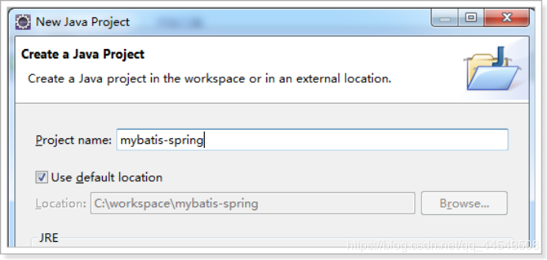
3.2.导入jar包
前面提到的jar包需要导入，如下图：
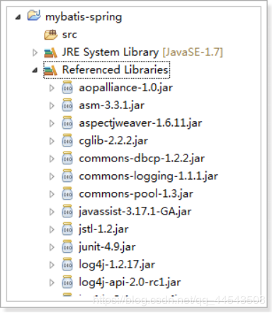
3.3.加入配置文件
1.mybatisSpring的配置文件
2.的配置文件sqlmapConfig.xml
a)数据库连接及连接池
b)事务管理（暂时可以不配置）
c)sqlsessionFactory对象，配置到spring容器中
d)mapeer代理对象或者是dao实现类配置到spring容器中。
创建资源文件夹config拷贝加入配置文件，如下图
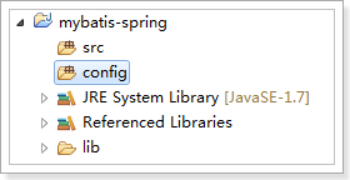
3.3.1.配置SqlMapConfig.xml
配置文件是SqlMapConfig.xml，如下：
<?xml version="1.0" encoding="UTF-8" ?>
<!DOCTYPE configuration
PUBLIC "-//mybatis.org//DTD Config 3.0//EN"
"http://mybatis.org/dtd/mybatis-3-config.dtd">
<configuration>
<!-- 设置别名 -->
<typeAliases>
<!-- 2. 指定扫描包，会把包内所有的类都设置别名，别名的名称就是类名，大小写不敏感 -->
<package name="com.gx.mybatis.pojo" />
</typeAliases>
</configuration>
3.3.2.applicationContext.xml
SqlSessionFactoryBean属于mybatis-spring这个jar包
对于spring来说，mybatis是另外一个架构，需要整合jar包。
在项目中加入mybatis-spring-1.2.2.jar的源码，如下图
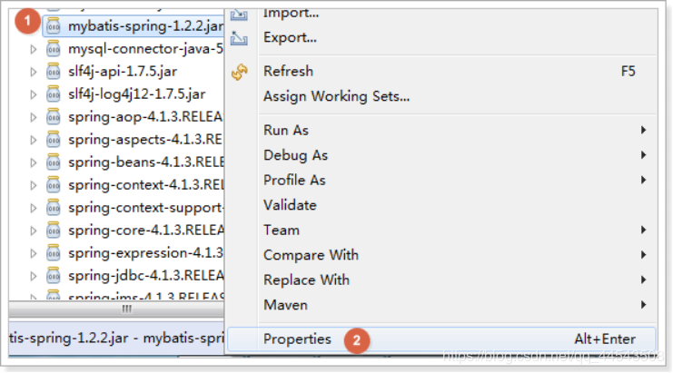
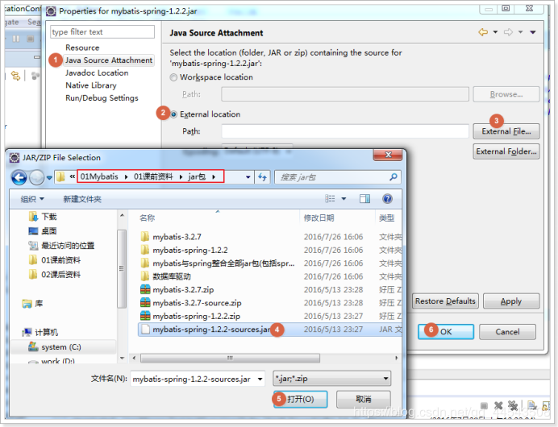
效果，如下图所示，图标变化，表示源码加载成功：
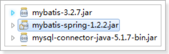
整合Mybatis需要的是SqlSessionFactoryBean，位置如下图：
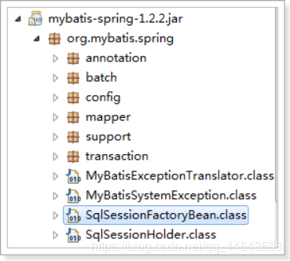
applicationContext.xml，配置内容如下
由于是原始Dao开发，所以
<?xml version="1.0" encoding="UTF-8"?>
<beans xmlns="http://www.springframework.org/schema/beans"
xmlns:context="http://www.springframework.org/schema/context" xmlns:p="http://www.springframework.org/schema/p"
xmlns:aop="http://www.springframework.org/schema/aop" xmlns:tx="http://www.springframework.org/schema/tx"
xmlns:xsi="http://www.w3.org/2001/XMLSchema-instance"
xsi:schemaLocation="http://www.springframework.org/schema/beans http://www.springframework.org/schema/beans/spring-beans-4.0.xsd
http://www.springframework.org/schema/context http://www.springframework.org/schema/context/spring-context-4.0.xsd
http://www.springframework.org/schema/aop http://www.springframework.org/schema/aop/spring-aop-4.0.xsd http://www.springframework.org/schema/tx http://www.springframework.org/schema/tx/spring-tx-4.0.xsd
http://www.springframework.org/schema/util http://www.springframework.org/schema/util/spring-util-4.0.xsd">
<!-- 加载配置文件 -->
<context:property-placeholder location="classpath:db.properties" />
<!-- 数据库连接池 -->
<bean id="dataSource" class="org.apache.commons.dbcp.BasicDataSource"
destroy-method="close">
<property name="driverClassName" value="${jdbc.driver}" />
<property name="url" value="${jdbc.url}" />
<property name="username" value="${jdbc.username}" />
<property name="password" value="${jdbc.password}" />
<property name="maxActive" value="10" />
<property name="maxIdle" value="5" />
</bean>
<!-- 配置SqlSessionFactory -->
<bean id="sqlSessionFactory" class="org.mybatis.spring.SqlSessionFactoryBean">
<!-- 配置mybatis核心配置文件 -->
<property name="configLocation" value="classpath:SqlMapConfig.xml" />
<!-- 配置数据源 -->
<property name="dataSource" ref="dataSource" />
</bean>
</beans>3.3.3.配置db.properties
jdbc.driver=com.mysql.jdbc.Driver
jdbc.url=jdbc:mysql://localhost:3306/mybatis?characterEncoding=utf-8
jdbc.username=root
jdbc.password=root
3.3.4.配置log4j.properties
# Global logging configuration
log4j.rootLogger=DEBUG, stdout
# Console output...
log4j.appender.stdout=org.apache.log4j.ConsoleAppender
log4j.appender.stdout.layout=org.apache.log4j.PatternLayout
log4j.appender.stdout.layout.ConversionPattern=%5p [%t] - %m%n3.3.5.效果：
加入的配置文件最终效果如下：
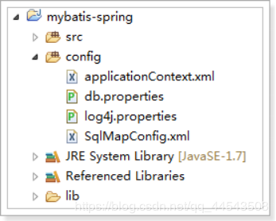
至此环境就搭建OK了！！！！
4.Dao的开发的两种实现方式
1、原始dao的开发方式
2、使用Mapper代理形式开发方式
a)直接配置Mapper代理
b)使用扫描包配置Mapper代理
需求：
1.实现根据用户id查询
2.实现根据用户名模糊查询
3.添加用户
4.1.创建pojo
public class User {
private int id;
private String username;// 用户姓名
private String sex;// 性别
private Date birthday;// 生日
private String address;// 地址
get/set。。。
}
4.2.传统dao的开发方式（方式一）
原始的DAO开发接口+实现类来完成。
需要dao实现类需要继承SqlsessionDaoSupport类
4.2.1.实现Mapper.xml
编写User.xml配置文件，如下：
<?xml version="1.0" encoding="UTF-8" ?>
<!DOCTYPE mapper
PUBLIC "-//mybatis.org//DTD Mapper 3.0//EN"
"http://mybatis.org/dtd/mybatis-3-mapper.dtd">
<mapper namespace="test">
<!-- 根据用户id查询 -->
<select id="queryUserById" parameterType="int" resultType="user">
select * from user where id = #{id}
</select>
<!-- 根据用户名模糊查询用户 -->
<select id="queryUserByUsername" parameterType="string"
resultType="user">
select * from user where username like '%${value}%'
</select>
<!-- 添加用户 -->
<insert id="saveUser" parameterType="user">
<selectKey keyProperty="id" keyColumn="id" order="AFTER"
resultType="int">
select last_insert_id()
</selectKey>
insert into user
(username,birthday,sex,address)
values
(#{username},#{birthday},#{sex},#{address})
</insert>
</mapper>4.2.2.加载Mapper.xml
在SqlMapConfig如下图进行配置:
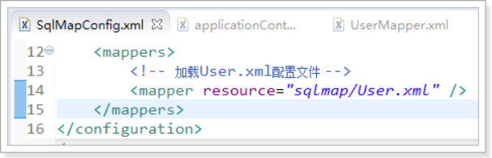
4.2.3.实现UserDao接口
public interface UserDao {
/**
* 根据id查询用户
*
* @param id
* @return
*/
User queryUserById(int id);
/**
* 根据用户名模糊查询用户列表
*
* @param username
* @return
*/
List<User> queryUserByUsername(String username);
/**
* 保存
*
* @param user
*/
void saveUser(User user);
}4.2.4.编写UserDaoImpl实现接口并且继承SqlSessionDaoSupport
编写DAO实现类，实现类必须继承SqlSessionDaoSupport
SqlSessionDaoSupport提供getSqlSession()方法来获取SqlSession
public class UserDaoImpl extends SqlSessionDaoSupport implements UserDao {
@Override
public User queryUserById(int id) {
// 获取SqlSession
SqlSession sqlSession = super.getSqlSession();
// 使用SqlSession执行操作
User user = sqlSession.selectOne("queryUserById", id);
// 不要关闭sqlSession
return user;
}
@Override
public List<User> queryUserByUsername(String username) {
// 获取SqlSession
SqlSession sqlSession = super.getSqlSession();
// 使用SqlSession执行操作
List<User> list = sqlSession.selectList("queryUserByUsername", username);
// 不要关闭sqlSession
return list;
}
@Override
public void saveUser(User user) {
// 获取SqlSession
SqlSession sqlSession = super.getSqlSession();
// 使用SqlSession执行操作
sqlSession.insert("saveUser", user);
// 不用提交,事务由spring进行管理
// 不要关闭sqlSession
}
}
4.2.4.1.SqlSessionDaoSupport源码
实现类必须继承SqlSessionDaoSupportSqlSessionDaoSupport提供getSqlSession()方法来获取SqlSession
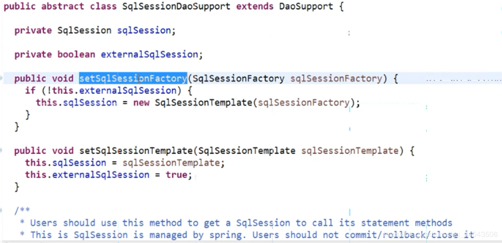
4.2.5.配置dao
把dao实现类配置到spring容器中
<!-- Dao原始Dao -->
<bean id="userDao" class="com.gx.mybatis.dao.UserDaoImpl">
<property name="sqlSessionFactory" ref="sqlSessionFactoryBean"/>
</bean>4.2.6.创建测试
创建测试方法，可以直接创建测试Junit用例。
如下图所示进行创建。
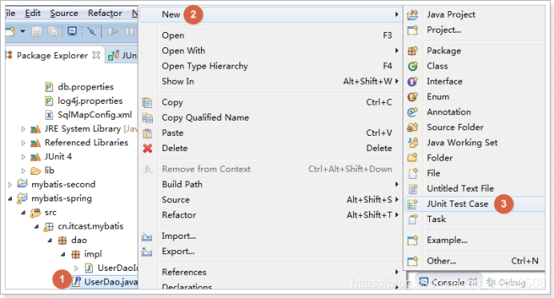
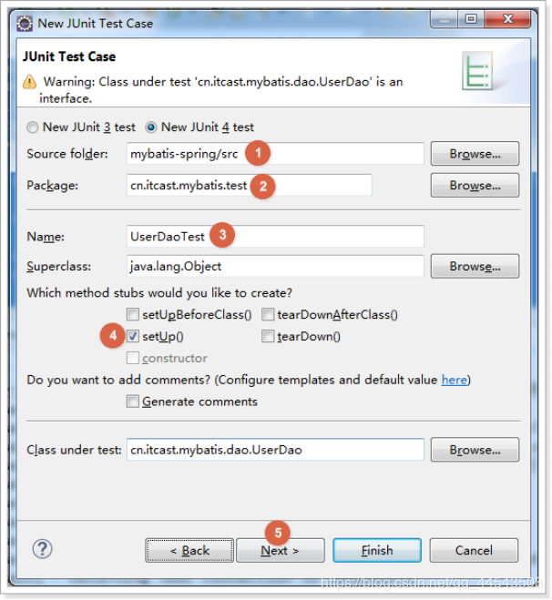
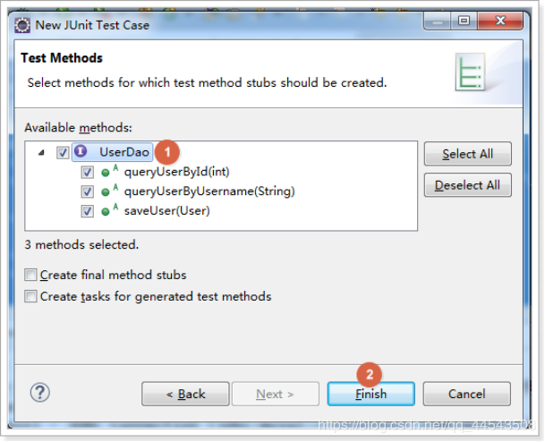
编写测试方法如下：
public class UserDaoTest {
private ApplicationContext context;
@Before
public void setUp() throws Exception {
this.context = new ClassPathXmlApplicationContext("classpath:applicationContext.xml");
}
@Test
public void testQueryUserById() {
// 获取userDao
UserDao userDao = this.context.getBean(UserDao.class);
User user = userDao.queryUserById(1);
System.out.println(user);
}
@Test
public void testQueryUserByUsername() {
// 获取userDao
UserDao userDao = this.context.getBean(UserDao.class);
List<User> list = userDao.queryUserByUsername("张");
for (User user : list) {
System.out.println(user);
}
}
@Test
public void testSaveUser() {
// 获取userDao
UserDao userDao = this.context.getBean(UserDao.class);
User user = new User();
user.setUsername("夏侯惇坑");
user.setSex("1");
user.setBirthday(new Date());
user.setAddress("三国");
userDao.saveUser(user);
System.out.println(user);
}
}
5.Mapper代理形式开发dao（方式二）
5.1.实现Mapper.xml
编写UserMapper.xml配置文件，如下：
<?xml version="1.0" encoding="UTF-8" ?>
<!DOCTYPE mapper
PUBLIC "-//mybatis.org//DTD Mapper 3.0//EN"
"http://mybatis.org/dtd/mybatis-3-mapper.dtd">
<mapper namespace="cn.itcast.mybatis.mapper.UserMapper">
<!-- 根据用户id查询 -->
<select id="queryUserById" parameterType="int" resultType="user">
select * from user where id = #{id}
</select>
<!-- 根据用户名模糊查询用户 -->
<select id="queryUserByUsername" parameterType="string"
resultType="user">
select * from user where username like '%${value}%'
</select>
<!-- 添加用户 -->
<insert id="saveUser" parameterType="user">
<selectKey keyProperty="id" keyColumn="id" order="AFTER"
resultType="int">
select last_insert_id()
</selectKey>
insert into user
(username,birthday,sex,address) values
(#{username},#{birthday},#{sex},#{address})
</insert>
</mapper>5.2.实现UserMapper接口
public interface UserMapper {
/**
* 根据用户id查询
*
* @param id
* @return
*/
User queryUserById(int id);
/**
* 根据用户名模糊查询用户
*
* @param username
* @return
*/
List<User> queryUserByUsername(String username);
/**
* 添加用户
*
* @param user
*/
void saveUser(User user);
}
5.3.方式一：配置mapper代理
在applicationContext.xml添加配置
MapperFactoryBean也是属于mybatis-spring整合包
<!-- Mapper代理的方式开发方式一，配置Mapper代理对象 -->
<bean id="userMapper" class="org.mybatis.spring.mapper.MapperFactoryBean">
<!-- 配置Mapper接口 -->
<property name="mapperInterface" value="com.gx.mybatis.mapper.UserMapper" />
<!-- 配置sqlSessionFactory -->
<property name="sqlSessionFactory" ref="sqlSessionFactory" />
</bean>
5.4.创建测试
public class UserMapperTest {
private ApplicationContext context;
@Before
public void setUp() throws Exception {
this.context = new ClassPathXmlApplicationContext("classpath:applicationContext.xml");
}
@Test
public void testQueryUserById() {
// 获取Mapper
UserMapper userMapper = this.context.getBean(UserMapper.class);
User user = userMapper.queryUserById(1);
System.out.println(user);
}
@Test
public void testQueryUserByUsername() {
// 获取Mapper
UserMapper userMapper = this.context.getBean(UserMapper.class);
List<User> list = userMapper.queryUserByUsername("张");
for (User user : list) {
System.out.println(user);
}
}
@Test
public void testSaveUser() {
// 获取Mapper
UserMapper userMapper = this.context.getBean(UserMapper.class);
User user = new User();
user.setUsername("安琪拉稀");
user.setSex("1");
user.setBirthday(new Date());
user.setAddress("中国");
userMapper.saveUser(user);
System.out.println(user);
}
}5.5.方式二：扫描包形式配置mapper(开发常用)
<!-- Mapper代理的方式开发方式二，扫描包方式配置代理 -->
<bean class="org.mybatis.spring.mapper.MapperScannerConfigurer">
<!-- 配置Mapper接口 -->
<property name="basePackage" value="com.gx.mybatis.mapper" />
</bean>每个mapper代理对象的id就是类名，首字母小写
6、Dao的开发的实现方式总结图
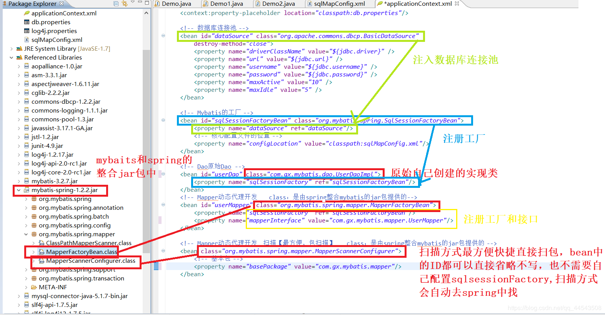
如果本文对你有一点点帮助，那么请点个赞呗，谢谢~
最后，若有不足或者不正之处，欢迎指正批评，感激不尽！如果有疑问欢迎留言，绝对第一时间回复！
欢迎各位关注我的公众号，一起探讨技术，向往技术，追求技术，说好了来了就是盆友喔...